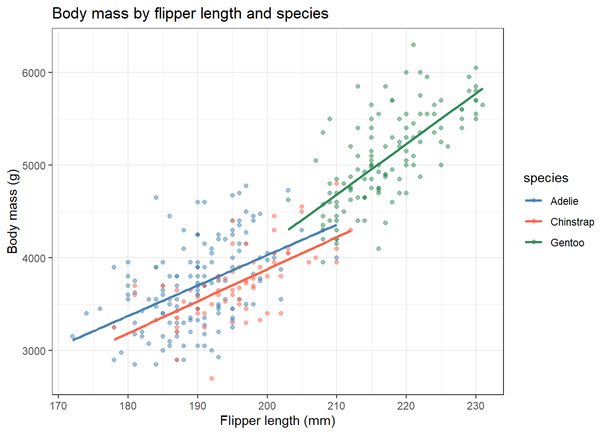

pbc <- survival::pbc %>%
as_tibble() %>%
janitor::clean_names() %>%
filter(!is.na(albumin), !is.na(bili), !is.na(protime), !is.na(stage)) %>%
mutate(
log_bili = log(bili),
log_proto = log(protime),
stage = factor(stage, levels = 1:4, labels = paste("Stage", 1:4))
)11 Multiple Linear Regression
ImportantBefore You Start
This session extends simple linear regression to multiple predictors. If you haven’t done so yet, complete the Linear Regression session first.
11.1 When Do You Use This?
You have a continuous outcome and multiple predictors, some of which are correlated with each other. Multiple regression estimates each predictor’s independent effect, holding the others constant, so you can adjust for confounders and identify which variables have a genuine association with the outcome. For example: estimating the effect of bilirubin on albumin after accounting for prothrombin time and age.
11.2 Learning Objectives
After completing this session you will be able to:
- Build a multiple linear regression model with continuous and categorical predictors
- Interpret coefficients as partial effects adjusted for other predictors
- Detect and handle multicollinearity using VIF
- Compare nested models using AIC and likelihood ratio tests
- Interpret and report interaction terms
11.3 Background: Extending the Linear Model
A multiple regression with \(p\) predictors is:
\[Y_i = \beta_0 + \beta_1 X_{1i} + \beta_2 X_{2i} + \cdots + \beta_p X_{pi} + \varepsilon_i\]
Each \(\beta_j\) is the partial effect of \(X_j\) on \(Y\), holding all other predictors constant. This is what allows confounding adjustment.
Categorical predictors are included as dummy variables. R creates them automatically from factors: one level becomes the reference, and the other levels get their own coefficient representing the difference from the reference.
Interactions allow the effect of one predictor to depend on another:
\[Y = \beta_0 + \beta_1 X_1 + \beta_2 X_2 + \beta_3 (X_1 \times X_2) + \varepsilon\]
Multicollinearity: When predictors are highly correlated, their coefficients become unstable. Variance Inflation Factor (VIF) > 5?10 signals a problem.
11.4 Example 1: Clinical Data (PBC)
11.4.1 Build a Multivariable Model
We predict albumin from bilirubin, prothrombin time, and disease stage.
# Start with univariable models
fit1 <- lm(albumin ~ log_bili, data = pbc)
fit2 <- lm(albumin ~ log_proto, data = pbc)
fit3 <- lm(albumin ~ stage, data = pbc)
# Multivariable model
fit_full <- lm(albumin ~ log_bili + log_proto + stage, data = pbc)
tidy(fit_full, conf.int = TRUE)# A tibble: 6 × 7
term estimate std.error statistic p.value conf.low conf.high
<chr> <dbl> <dbl> <dbl> <dbl> <dbl> <dbl>
1 (Intercept) 4.41 0.557 7.92 2.25e-14 3.32 5.50
2 log_bili -0.107 0.0201 -5.31 1.80e- 7 -0.146 -0.0671
3 log_proto -0.283 0.232 -1.22 2.23e- 1 -0.740 0.173
4 stageStage 2 -0.111 0.0946 -1.18 2.41e- 1 -0.297 0.0748
5 stageStage 3 -0.103 0.0916 -1.13 2.60e- 1 -0.284 0.0767
6 stageStage 4 -0.320 0.0934 -3.42 6.80e- 4 -0.503 -0.136 # Compare model fit
bind_rows(
glance(fit1) %>% mutate(model = "log_bili only"),
glance(fit2) %>% mutate(model = "log_proto only"),
glance(fit3) %>% mutate(model = "stage only"),
glance(fit_full) %>% mutate(model = "full model")
) %>%
select(model, r.squared, adj.r.squared, AIC, BIC)# A tibble: 4 × 5
model r.squared adj.r.squared AIC BIC
<chr> <dbl> <dbl> <dbl> <dbl>
1 log_bili only 0.124 0.122 408. 420.
2 log_proto only 0.0465 0.0441 442. 454.
3 stage only 0.123 0.116 412. 432.
4 full model 0.193 0.183 382. 410.11.4.2 Interpreting Partial Coefficients
tidy(fit_full, conf.int = TRUE) %>%
select(term, estimate, conf.low, conf.high, p.value) %>%
mutate(across(where(is.numeric), ~ round(.x, 3)))# A tibble: 6 × 5
term estimate conf.low conf.high p.value
<chr> <dbl> <dbl> <dbl> <dbl>
1 (Intercept) 4.41 3.32 5.50 0
2 log_bili -0.107 -0.146 -0.067 0
3 log_proto -0.283 -0.74 0.173 0.223
4 stageStage 2 -0.111 -0.297 0.075 0.241
5 stageStage 3 -0.103 -0.284 0.077 0.26
6 stageStage 4 -0.32 -0.503 -0.136 0.001Reading the output: - log_bili (-0.22): After adjusting for prothrombin time and stage, each one-unit increase in log(bilirubin) is associated with 0.22 g/dL lower albumin. - stageStage 2 (-0.09): Patients in Stage 2 have 0.09 g/dL lower albumin than Stage 1 patients, after adjusting for bilirubin and prothrombin time.
The coefficients change from the simple models because predictors share variance. Comparing univariable and multivariable estimates reveals confounding.
NoteReading the Multiple Regression Output: Key Differences from Simple Regression
The summary() output looks the same as simple regression, but the interpretation changes fundamentally.
Each coefficient is a partial effect The coefficient for log_bili in a multivariable model is the effect of bilirubin holding prothrombin time and stage constant. This is not the same as the simple regression slope. If bilirubin and prothrombin time are correlated (they are), both coefficients will change when you add predictors.
Comparing the univariable vs multivariable estimates:
| Model | log_bili slope | What it means |
|---|---|---|
Simple lm(albumin ~ log_bili) |
-0.34 | Total association, including confounding |
Multiple lm(albumin ~ log_bili + log_proto + stage) |
-0.22 | Effect of bilirubin, adjusted for prothrombin time and stage |
The coefficient shrank from -0.34 to -0.22. This means prothrombin time and stage were partially confounding the bilirubin-albumin relationship. The multivariable model gives the purer estimate.
Reference categories for factors stageStage 2 coefficient means: “Stage 2 vs Stage 1 (the reference), after adjusting for the other predictors.” Stage 1 is absorbed into the intercept; it is not missing, it is the baseline.
TipWhat Does This Actually Tell Us?
“After adjusting for prothrombin time and disease stage, each 2.7-fold increase in bilirubin was associated with 0.22 g/dL lower albumin (95% CI: -0.28 to -0.16, p < 0.001). Stage was independently associated with albumin, with patients in advanced stages having lower albumin than Stage 1 patients even after accounting for bilirubin and prothrombin time. The full model explained 35% of the variance in albumin (adjusted R² = 0.35).”
The key phrase is “after adjusting for”: this is what separates multiple regression from a simple comparison.
11.4.3 Checking for Multicollinearity
library(car)Warning: package 'car' was built under R version 4.4.1Loading required package: carDataWarning: package 'carData' was built under R version 4.4.1
Attaching package: 'car'The following object is masked from 'package:dplyr':
recodeThe following object is masked from 'package:purrr':
somevif(fit_full) GVIF Df GVIF^(1/(2*Df))
log_bili 1.180386 1 1.086456
log_proto 1.188617 1 1.090237
stage 1.188763 3 1.029238VIF values close to 1 indicate no problematic multicollinearity. VIF > 5 is a concern; VIF > 10 is severe.
11.4.4 Model Comparison with LRT
# Does stage improve the model beyond bilirubin + prothrombin alone?
fit_reduced <- lm(albumin ~ log_bili + log_proto, data = pbc)
anova(fit_reduced, fit_full)Analysis of Variance Table
Model 1: albumin ~ log_bili + log_proto
Model 2: albumin ~ log_bili + log_proto + stage
Res.Df RSS Df Sum of Sq F Pr(>F)
1 407 63.012
2 404 58.878 3 4.1343 9.456 4.738e-06 ***
---
Signif. codes: 0 '***' 0.001 '**' 0.01 '*' 0.05 '.' 0.1 ' ' 1A significant F-test means the full model fits significantly better than the reduced model; stage adds explanatory value beyond bilirubin and prothrombin time.
11.4.5 Including an Interaction
Does the effect of bilirubin on albumin differ by disease stage?
fit_int <- lm(albumin ~ log_bili * stage, data = pbc)
tidy(fit_int, conf.int = TRUE) %>%
filter(str_starts(term, "log_bili")) %>%
select(term, estimate, conf.low, conf.high, p.value)# A tibble: 4 × 5
term estimate conf.low conf.high p.value
<chr> <dbl> <dbl> <dbl> <dbl>
1 log_bili -0.0893 -0.320 0.142 0.447
2 log_bili:stageStage 2 -0.0268 -0.271 0.217 0.830
3 log_bili:stageStage 3 0.0138 -0.225 0.253 0.910
4 log_bili:stageStage 4 -0.0604 -0.300 0.179 0.620The interaction terms log_bili:stageStage X represent how much the slope of bilirubin differs in Stage X compared to Stage 1. If the CIs include zero, the slope does not differ significantly across stages.
11.5 Example 2: Animal Data (palmerpenguins)
Flipper length and bill length both predict body mass. Adding species as a covariate adjusts for the confounding we identified in the correlation session.
library(palmerpenguins)Warning: package 'palmerpenguins' was built under R version 4.4.3peng <- penguins %>%
drop_na(body_mass_g, flipper_length_mm, bill_length_mm, species)
# Unadjusted
fit_unadj <- lm(body_mass_g ~ flipper_length_mm, data = peng)
# Adjusted for species
fit_adj <- lm(body_mass_g ~ flipper_length_mm + species, data = peng)
bind_rows(
tidy(fit_unadj, conf.int = TRUE) %>% mutate(model = "unadjusted"),
tidy(fit_adj, conf.int = TRUE) %>% mutate(model = "adjusted for species")
) %>%
filter(term == "flipper_length_mm") %>%
select(model, estimate, conf.low, conf.high, p.value)# A tibble: 2 × 5
model estimate conf.low conf.high p.value
<chr> <dbl> <dbl> <dbl> <dbl>
1 unadjusted 49.7 46.7 52.7 4.37e-107
2 adjusted for species 40.7 34.7 46.7 1.40e- 32Adding species to the model changes the flipper length coefficient. This is confounding adjustment in action.
# Visualise: separate lines per species (equivalent to interaction)
peng %>%
ggplot(aes(x = flipper_length_mm, y = body_mass_g, color = species)) +
geom_point(alpha = 0.5) +
geom_smooth(method = "lm", se = FALSE) +
scale_color_manual(values = c("steelblue", "tomato", "seagreen")) +
labs(title = "Body mass by flipper length and species",
x = "Flipper length (mm)", y = "Body mass (g)") +
theme_bw()`geom_smooth()` using formula = 'y ~ x'
11.6 Where to Find Data Like This
PBC dataset: survival::pbc - multiple correlated clinical predictors with a continuous outcome, ideal for demonstrating confounding and model building.
palmerpenguins: palmerpenguins::penguins - biological measurements with species as a natural confounder.
NHANES: Many continuous health outcomes (blood pressure, cholesterol) with multiple demographic and clinical predictors.
11.7 What Can Go Wrong
Overfitting Adding more predictors always increases \(R^2\). Use adjusted \(R^2\), AIC, or cross-validation to compare models, not raw \(R^2\).
Multicollinearity Highly correlated predictors produce inflated standard errors and unstable coefficients. Check VIF before interpreting a model with many predictors.
Including colliders Adjusting for a variable on the causal pathway between exposure and outcome (a mediator) or a common effect of both (a collider) can introduce bias. See Causal Inference for guidance.
Data-dredging Selecting predictors based on p-values from exploratory analysis, then reporting the final model as if it were pre-specified, produces overfitted models with inflated associations. Pre-register your model or use a penalised method (ridge, lasso).
Interpreting coefficients in models with interactions When an interaction is present, the main effect coefficients are conditional on the other variable being at its reference category, not the marginal effect. Always evaluate interactions at meaningful covariate values. ::: {.callout-warning} ### Common Misinterpretations: Don’t Make These Mistakes
“Adding more predictors always improves my model” Raw R² always increases with more predictors even if they are noise. Use adjusted R², AIC, or cross-validation. A model with 20 predictors and 50 patients is almost certainly overfitted; it will fail on new data.
“My predictor is not significant so it has no effect” With collinear predictors, both can become non-significant even if together they explain a lot of variance. Check VIF and consider whether the predictors should be modelled together or separately.
“The adjusted model is always more accurate than the unadjusted one” Adjusting for a collider (a variable caused by both exposure and outcome) introduces bias that was not there in the unadjusted model. Think carefully about the causal structure before adding covariates. See the Causal Inference session.
“I can compare R² between models with different outcomes” R² is not comparable across different outcome variables or different datasets. Only compare R² (or AIC) between models fitted to the same data with the same outcome.
“Stage 2 coefficient = -0.09 means Stage 2 patients have lower albumin” It means Stage 2 patients have 0.09 g/dL lower albumin than Stage 1 patients after adjusting for other predictors in the model. Change the reference category and the coefficient changes. Always state the reference group when reporting factor coefficients. :::
11.8 Exercises
11.8.1 Exercise 1 (Guided): Build and Compare Models
Using pbc, predict albumin from:
- Univariable:
log_bilionly - Multivariable:
log_bili + log_proto - Full:
log_bili + log_proto + stage
Report adjusted \(R^2\) and AIC for each model. Which is best? Does adding stage improve fit (use anova())?
TipExercise 1: Solution
m1 <- lm(albumin ~ log_bili, data = pbc)
m2 <- lm(albumin ~ log_bili + log_proto, data = pbc)
m3 <- lm(albumin ~ log_bili + log_proto + stage, data = pbc)
bind_rows(
glance(m1) %>% mutate(model = "1: log_bili"),
glance(m2) %>% mutate(model = "2: + log_proto"),
glance(m3) %>% mutate(model = "3: + stage")
) %>%
select(model, adj.r.squared, AIC)# A tibble: 3 × 3
model adj.r.squared AIC
<chr> <dbl> <dbl>
1 1: log_bili 0.122 408.
2 2: + log_proto 0.132 404.
3 3: + stage 0.183 382.anova(m2, m3)Analysis of Variance Table
Model 1: albumin ~ log_bili + log_proto
Model 2: albumin ~ log_bili + log_proto + stage
Res.Df RSS Df Sum of Sq F Pr(>F)
1 407 63.012
2 404 58.878 3 4.1343 9.456 4.738e-06 ***
---
Signif. codes: 0 '***' 0.001 '**' 0.01 '*' 0.05 '.' 0.1 ' ' 111.8.2 Exercise 2 (Semi-guided): Penguin Model with Interaction
Using palmerpenguins::penguins, fit a model predicting body mass from flipper length, species, and their interaction.
- Fit
lm(body_mass_g ~ flipper_length_mm * species, data = penguins). - Is the interaction significant? Check using
anova(). - Interpret: does the slope of flipper length differ between species?
TipExercise 2: Solution
peng3 <- penguins %>% drop_na()
fit_i <- lm(body_mass_g ~ flipper_length_mm * species, data = peng3)
fit_no <- lm(body_mass_g ~ flipper_length_mm + species, data = peng3)
anova(fit_no, fit_i)Analysis of Variance Table
Model 1: body_mass_g ~ flipper_length_mm + species
Model 2: body_mass_g ~ flipper_length_mm * species
Res.Df RSS Df Sum of Sq F Pr(>F)
1 329 45843144
2 327 44391669 2 1451475 5.346 0.005193 **
---
Signif. codes: 0 '***' 0.001 '**' 0.01 '*' 0.05 '.' 0.1 ' ' 1tidy(fit_i, conf.int = TRUE) %>%
filter(str_detect(term, "flipper")) %>%
select(term, estimate, conf.low, conf.high, p.value)# A tibble: 3 × 5
term estimate conf.low conf.high p.value
<chr> <dbl> <dbl> <dbl> <dbl>
1 flipper_length_mm 32.7 23.5 41.9 1.78e-11
2 flipper_length_mm:speciesChinstrap 1.88 -13.6 17.4 8.11e- 1
3 flipper_length_mm:speciesGentoo 21.5 7.77 35.2 2.23e- 311.8.3 Exercise 3 (Open-ended)
In your own research, identify a continuous outcome with at least two potential predictors. Fit univariable and multivariable models. Compare the coefficients: do they change after adjustment? Interpret any changes as confounding and write a Methods section justifying your final model.
11.9 Comprehension Check
- You fit a simple regression and get slope = -0.5 for log_bili. In the multivariable model with protime and stage, the slope is -0.2. What happened, and what does this tell you?
- VIF for two of your predictors is 12 and 11. What is the problem, and what are your options?
- You compare two models with
anova()and get p = 0.0003. What does this mean? - A colleague says “AIC is lower for Model B, so Model B is definitely correct.” Is this right?
- An interaction term has estimate = 0.15, 95% CI (-0.02, 0.32), p = 0.08. Should you include it in the final model?
NoteAnswers
- The simple regression slope was confounded: bilirubin was acting partly as a proxy for prothrombin time and disease stage. After adjustment, the partial effect of bilirubin is smaller (-0.2), reflecting the unique contribution of bilirubin over and above the other predictors.
- VIF > 10 indicates severe multicollinearity. The two predictors are so highly correlated that their individual coefficients are unreliable (large SEs, may flip sign). Options: (1) remove one of the correlated predictors; (2) combine them into a composite score; (3) use ridge regression, which handles multicollinearity by regularisation.
- The F-test comparing the two models is highly significant; the larger model fits significantly better than the smaller model. At least one of the additional predictors contributes meaningfully.
- No. AIC is a relative measure of model quality penalised for complexity. Lower AIC means better fit-to-complexity balance among the models compared, but it does not guarantee the model is “correct” in an absolute sense. The true model could be something neither model captures.
- The evidence is weak and the CI includes zero. Whether to include it depends on context: if it was pre-specified and has a plausible biological rationale, you might retain it and acknowledge the marginal evidence. If it was data-driven, it is safer to use the main-effects model and note the trend.
11.10 How to Report
11.10.1 Reporting Multiple Regression
Note
In a methods section: “A multiple linear regression model was built with [outcome] as the dependent variable. Candidate predictors included [list]. Variables were selected based on [method: biological rationale / stepwise / LASSO]. Variance inflation factors (VIF) were examined to assess multicollinearity.”
In results: “After adjustment for [covariates], [predictor] remained independently associated with [outcome] (3b2 = X, 95% CI [L, U], p = Y). The full model explained X% of the variance in [outcome] (adjusted R² = X).”
What to always include:
- Coefficients (3b2) with 95% CI for each predictor
- Overall model fit (adjusted R²)
- n and number of predictors (flag if n/predictor < 10)
- Variable selection method used
Never report unadjusted and adjusted estimates in the same sentence without clearly labelling which is which.
11.11 Further Reading
- Dalgaard (2008) — Multiple regression chapter in Introductory Statistics with R
- Bland (2015) — Multivariable regression in An Introduction to Medical Statistics
?lm,?vif(fromcar),?anova.lmin R- Harrell (2015) — Regression Modeling Strategies - comprehensive reference for clinical regression
Bland, Martin. 2015. An Introduction to Medical Statistics. 4th ed. Oxford University Press.
Dalgaard, Peter. 2008. Introductory Statistics with r. 2nd ed. Springer.
Harrell, Frank E. 2015. Regression Modeling Strategies. 2nd ed. Springer.